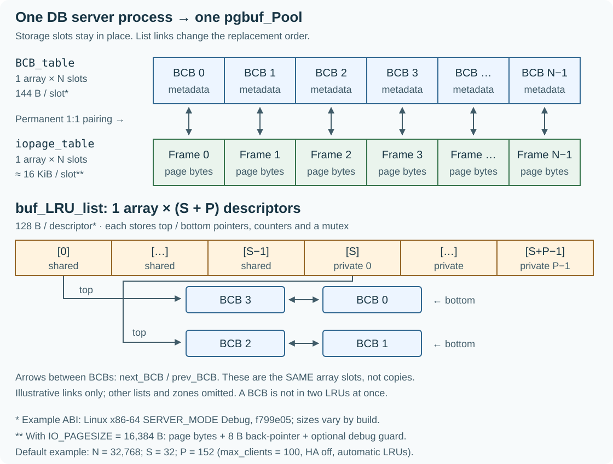

버퍼가 가득 찼다면, 무엇부터 만들까?
예제의 페이지 이름: H는 Hot을 뜻하며, H1·H2는 자주 다시 읽는 페이지입니다. S는 Scan을 뜻하며, S1·S2·S3는 순차 스캔에서 한 번씩 읽는 페이지입니다. 숫자는 각 페이지를 구별하는 번호입니다. H/S는 설명을 위해 붙인 이름이며, CUBRID 내부 상태나 LRU 구역 이름이 아닙니다.
Session A는 H1과 H2를 반복해서 읽습니다. Session B는 S1, S2, S3, …를 한 번씩 읽는 scan을 수행합니다. 나중에는 B도 H1을 읽습니다. 이 페이지들이 어디에 놓이고 어떻게 교체되는지 끝까지 따라갑니다.
하나의 작업 상황, 두 접근 패턴
H1 → H2 → H1 → H2 → …
S1 → S2 → S3 → … → H1
크기가 한정된 하나의 frame pool
B가 새 페이지를 계속 읽는다고 A가 곧 다시 사용할 페이지를 매번 밀어내도 될까요? 교체 정책이 좋으면 frame을 덮어써도 항상 안전할까요?
결과와 이유 펼치기
유용한 페이지를 남겨 두는 정책과 frame을 안전하게 재사용하는 절차가 모두 필요합니다. 먼저 정책을 구성하고, 그다음 안전성을 따져봅니다. 그림의 페이지들은 더 큰 pool에서 일부만 골라 표시한 것이며, 작은 CUBRID 설정이나 실측 실행 결과가 아닙니다.
1. 빈 frame이 있는데도 교체해야 할까?
사용과 반납: caller는 페이지를 fix해서 사용하는 동안 그 frame이 유지되게 하고, 사용을 마치면 unfix로 반납합니다. 남아 있는 fix가 있으면 그 frame을 다른 페이지에 쓸 수 없습니다. Dirty 페이지에는 재사용 전에 보존해야 할 변경이 남아 있고, clean 페이지에는 그런 dirty 변경이 없습니다.
B가 S1을 요청했지만 resident hash에서 찾지 못했습니다. Miss입니다. Frame은 페이지 내용을 담고 BCB는 그 페이지의 식별자와 상태를 기록합니다. 아직 페이지를 담지 않은 BCB가 하나 있다면 어떻게 할까요?
Frame 확보의 첫 갈림길
기존 페이지를 내보내지 않고 사용
Resident page 중 frame을 재사용할 대상 찾기
결과와 이유 펼치기
Invalid list는 resident 식별자가 없는 BCB들을 연결합니다. 할당 시 맨 앞에서 하나를 꺼낼 수 있습니다. 이 리스트가 없다면 빈 자리를 찾는 다른 구조나 탐색이 필요합니다. 여기가 비었을 때 victim을 찾습니다. Victim은 메모리에서 내보낼 대상으로 선택된 페이지이며, 디스크 페이지를 삭제하는 것은 아닙니다.
소스: pgbuf_allocate_bcb() · pgbuf_get_bcb_from_invalid_list()
2. 정확한 LRU 리스트 하나면 충분하지 않을까?
먼저 단순하게 설계해 봅니다. Hit마다 페이지를 리스트 맨 앞으로 옮기고, 맨 뒤에는 가장 오래전에 사용한 페이지를 둡니다. 정책만 비교하도록 예제 페이지는 모두 clean이며 사용이 끝났다고 가정합니다.
교과서 모델: 앞 → 뒤
H2 → H1 → …
S9 → S8 → … → H2 → H1
A가 H1을 다시 요청
결과와 이유 펼치기
긴 scan은 A가 돌아오기 전에 재사용할 H1/H2를 밀어낼 수 있습니다. 여러 worker가 정확한 순서를 갱신하면 공통 리스트 lock에서도 경쟁합니다. 리스트 하나로도 동작하지만, 이런 비용 때문에 경쟁을 나누고 위치 갱신 횟수를 줄일 방법을 생각하게 됩니다. 리스트를 여러 개 만든다고 scan 문제가 저절로 해결되지는 않습니다. 진입·quota·zone 정책이 함께 필요합니다.
이것은 설계를 이해하기 위한 반례입니다. 모든 작업이 빨라진다거나 실제 CUBRID가 이 순서로 개발되었다는 주장은 아닙니다.
3. 리스트가 여러 개면 메모리 풀도 여러 개일까?
BCB들을 여러 리스트로 나누어 연결해 봅시다. H1을 다른 리스트로 옮길 때 페이지 내용도 복사해야 할까요? Resident hash는 무엇을 가리킬까요?
저장 공간과 연결 관계는 다른 역할
H1 → hash → BCB[17]
BCB[17] ↔ frame[17]
… ↔ BCB[17] ↔ …
결과와 이유 펼치기
Pool이 BCB 배열과 frame 저장 공간을 소유합니다. LRU descriptor에는 리스트 양 끝, zone 경계, mutex가 있고, BCB에는 이전·다음 BCB를 잇는 링크가 있습니다. Descriptor 하나가 설명하는 것은 frame 하나가 아니라 리스트 하나입니다. 소속을 옮겨도 링크와 상태만 바뀌며 frame 주소나 내용은 그대로입니다.
Shared와 private descriptor는 하나의 배열에 있습니다. BCB 하나는 한 시점에 최대 하나의 LRU에 속하며, 막 읽어 왔거나 이동 중일 때는 잠시 어느 LRU에도 속하지 않을 수 있습니다. Hash 조회와 fix/latch 보호는 이 소속과 별개입니다.
소스: PGBUF_BCB / PGBUF_LRU_LIST · pgbuf_initialize_lru_list()
하나의 descriptor 배열, 여러 BCB 연결 리스트
Verified mechanism · f799e05. Shared LRU와 private LRU는 모두 PGBUF_LRU_LIST를 사용합니다. 풀은 연속된 buf_LRU_list 배열 하나를 할당합니다. Shared 항목은 [0, S), private 항목은 [S, S + P)를 차지하며, 각 descriptor는 같은 BCB_table에 있는 BCB들을 별도의 리스트로 연결합니다.

Private replacement domain은 세션과 연결된 교체 정책의 관리 단위이며, 페이지에 대한 독점 접근권이 아닙니다. 리스트마다 별도의 프레임을 할당하지 않습니다. BCB는 동시에 최대 하나의 LRU에 속하며, flags에 리스트 인덱스와 zone을 기록합니다. 빈 리스트의 양 끝 포인터는 null입니다. 새로 읽은 BCB는 메모리에 상주하더라도 일반적인 마지막 unfix 시점에 편입되기 전까지 어느 LRU에도 속하지 않을 수 있습니다.
LRU 하나의 이중 연결 구조
Intrusive doubly linked list: BCB 자체에 연결 포인터가 들어 있으므로 리스트 노드를 별도로 할당하지 않습니다. Shared와 private descriptor 모두 같은 구조를 사용합니다. 아래 예시는 zone마다 BCB 하나를 두었지만, 실제 zone에는 여러 BCB가 있거나 아무것도 없을 수 있습니다.
PGBUF_LRU_LIST · 128 B*
top → A · bottom_1 → A · bottom_2 → B · bottom → C
prev_BCB = NULL
next_BCB = Bnext_BCB →
← prev_BCBnext_BCB ↓
↑ prev_BCBprev_BCB = A
next_BCB = Cnext_BCB →
← prev_BCBnext_BCB ↓
↑ prev_BCBprev_BCB = B
next_BCB = NULLnext_BCB는 bottom 방향으로, prev_BCB는 top 방향으로 이어집니다. bottom_1과 bottom_2는 각각 해당 zone의 마지막 BCB를 가리키며, 해당 zone이 비어 있으면 null입니다. victim_hint는 후보 탐색의 시작점을 제공할 뿐, 별도 리스트나 프레임 재사용 허가를 뜻하지 않습니다.
Descriptor에는 리스트 mutex 하나, zone별 개수와 임계값, 후보 수, tick, flags, 배열 인덱스, private 리스트용 quota도 들어 있습니다. 리스트 변경은 LRU mutex로 보호합니다. 이미 찾은 BCB를 제거할 때는 양옆 BCB를 다시 연결하고 끝점·경계·카운터를 갱신합니다. 연결 포인터 변경 자체는 O(1)이지만, victim 탐색이나 여러 경계 노드의 강등에는 순회가 필요할 수 있습니다. Private에서 shared로 옮길 때도 같은 BCB를 분리한 뒤 다시 연결하며 페이지 바이트는 복사하지 않습니다. 최종 victim 자격은 별도의 BCB 보호 아래 다시 확인해야 합니다.
BCB / LRU fields · Top insertion · Removal and neighbor repair · List mutex and zone adjustment
일반적인 기본 설정에서의 메모리 크기
기본 설정에서 유도한 예시: server mode, max_clients = 100, HA off, LRU 수 자동 설정, 버퍼 32,768개, I/O 페이지 16 KiB를 가정합니다. 내부 값 MAX_NTRANS = 102에는 admin과 system 예약분이 포함됩니다. 따라서 S = max(4, min(102, floor(32768 / 1000))) = 32, P = 102 + 50 = 152입니다.
| 할당 대상 / 필드 | 계산 | 대략적인 크기 |
|---|---|---|
| Shared descriptor | 32 × 128 B | 4 KiB |
| Private descriptor | 152 × 128 B | 19 KiB |
| BCB 배열 (LRU 링크 포함) | 32,768 × 144 B | 4.5 MiB |
| BCB당 LRU 포인터 2개 (위 BCB 크기에 포함) | 32,768 × 16 B | 512 KiB |
| 페이지 바이트만 | 32,768 × 16 KiB | 512 MiB |
| 프레임의 BCB 역방향 포인터, 추가 · 무슨 포인터인가요? | 32,768 × 8 B | 256 KiB |
추가 설명: 프레임마다 BCB 역방향 포인터가 필요한 이유
프레임을 담는 PGBUF_IOPAGE_BUFFER에는 실제 페이지 외에 PGBUF_BCB *bcb가 하나 들어 있습니다. BCB가 iopage_buffer로 자기 프레임을 가리킨다면, 이 역방향 포인터(back-pointer)는 프레임에서 자기 BCB로 돌아가는 경로입니다.
호출자가 페이지 포인터를 pgbuf_unfix()에 전달하면, CAST_PGPTR_TO_BFPTR가 그 페이지를 담은 프레임 구조체의 위치를 계산하고 bcb를 읽습니다. 이렇게 해당 페이지의 fix count와 latch 상태를 관리하는 BCB를 찾습니다.
위 64비트 환경에서는 프레임마다 8바이트 포인터가 하나씩 필요하므로 32,768 × 8 B = 262,144 B = 256 KiB입니다. ‘추가’는 페이지 이미지 용량 512 MiB 외에 드는 관리 메모리라는 뜻입니다. BCB 내부에 이미 계산된 프레임 포인터와는 별도로, 프레임 쪽에 저장됩니다.
Verified mechanism: PGBUF_IOPAGE_BUFFER · CAST_PGPTR_TO_BFPTR.
23 KiB는 LRU descriptor 184개의 합계이며, 연결된 페이지 크기는 포함하지 않습니다. 확인한 Linux x86-64 SERVER_MODE Debug 오브젝트에서 128바이트 descriptor는 mutex 40바이트, 8바이트 포인터 5개, 4바이트 정수 11개, 패딩 4바이트로 구성됩니다. BCB는 144바이트이며 LRU 포인터 두 개의 16바이트가 이미 포함되어 있습니다. 크기는 ABI와 빌드 옵션에 따라 달라집니다. 프레임 할당 간격은 CUBRID_DEBUG guard를 제외하면 16,392바이트입니다. 여기에는 hash table, holder, queue, allocator 오버헤드 등의 메모리를 합산하지 않았습니다.
LRU마다 고정된 바이트 용량이 있는 것은 아닙니다. 연결된 BCB 수와 private quota는 실행 중 달라집니다. 풀 크기를 184로 나눈 값을 리스트별 예약 메모리로 해석하면 안 됩니다. 접속 한도, 페이지 크기, HA 예약분, 명시적 chain 설정이 달라지면 위 계산도 달라집니다.
Build size receipt · Default count derivation · LRU allocation · Private count
3a. 처음 읽은 페이지는 언제 리스트에 들어갈까?
Private 배정은 세션이 사용할 교체 관리용 LRU 리스트를 미리 정해 두는 것이며, 이 예제에서 B에 배정된 리스트를 PB라고 부릅니다.
일반적인 서버 SQL 세션에는 private 배정이 있다고 보면 됩니다. 기준 리비전의 기본 설정에서는 세션을 만들 때 private LRU를 배정하고, 요청을 처리하는 스레드가 그 배정을 전달받습니다.
Private 배정이 없는 경우는 왜 생길까?
num_private_chains = 0으로 초기화한 서버: private LRU 정책을 꺼 두었으므로 배정 함수가-1을 반환합니다.- Standalone 모드: 소스에서 private LRU 개수를 0으로 설정하므로 배정이 없습니다.
- 세션이 아직 연결되지 않은 서버 요청: 전달받을 세션 배정이 없어 실행 스레드의 인덱스가
-1로 남습니다.
Private 리스트가 모두 사용 중이어도 배정을 포기하지 않고 활동이 적은 리스트를 함께 사용합니다. 또한 vacuum worker는 별도로 private LRU를 배정받으므로, 백그라운드 작업이라고 항상 배정이 없는 것은 아닙니다.
아래의 일반적인 첫 배치 조건에서는 private 배정이 있으면 private LRU1, 없으면 shared LRU2로 들어갑니다. 이는 새 페이지의 첫 배치 규칙이며, private 배정이 있는 세션도 이미 shared에 있는 페이지를 읽을 수 있습니다.
Source: session assignment · request thread · private LRU initialization · pgbuf_assign_private_lru() · vacuum worker assignment · num_private_chains
첫 배치를 따라가는 예제이며, 시작 상태를 따로 둡니다. B는 private 영역 PB를 배정받았고 S1은 일반적인 clean 페이지입니다. AOUT는 꺼져 있습니다. 대기 중인 reader/writer, move-to-bottom 요청, vacuum·temporary-page 예외, quota 조정, frame을 기다리는 할당자는 없습니다. PB의 양수 보호 threshold에는 여유가 있습니다. LRU1은 앞쪽 보호 구간이고 LRU2는 그 다음 구간입니다. 구간별 규칙은 첫 배치 뒤에 설명합니다.
B가 S1에서 miss를 만나 frame을 확보하고, S1을 읽어 사용합니다. “메모리에 있다”와 “이미 LRU에 배치됐다”를 같은 뜻으로 봐도 될까요?
S1을 처음 사용하는 과정
S1은 resident · BCB는 VOID
fcnt → 0
Private 배정이 있으면 PB top / LRU1
결과와 이유 펼치기
Private 배정은 이 페이지의 miss보다 먼저 존재합니다. pgbuf_assign_private_lru()는 배정된 세션이 없는 리스트 중 페이지 수가 가장 적은 것을 우선하고, 그런 리스트가 없으면 활동이 가장 적은 리스트를 고릅니다. 실행 스레드는 세션의 배정을 전달받습니다. 페이지마다 무작위로 고르는 인덱스도, 페이지의 영구 식별자도 아닙니다.
Source: pgbuf_assign_private_lru()
VOID는 현재 LRU 소속이 없다는 뜻이며 frame이 비었다는 뜻은 아닙니다. 일반 경로에서는 마지막 사용이 끝나는 조건을 만족한 final unfix에서 배치합니다. Private 배정이 있으면 private LRU1에, 없으면 shared LRU2에 들어갑니다. 기준 리비전에서 AOUT가 꺼져 있을 때의 동작입니다. S2와 S3도 같은 진입 규칙을 따릅니다.
어떤 실행 주체가 자신의 마지막 fix를 반납해도 다른 주체의 fix가 남을 수 있습니다. 여기서 final unfix는 특정 주체의 마지막 반납이 아니라 BCB 전체의 count가 0이 되는 반납입니다. Fix count인 fcnt는 남아 있는 fix의 수이며 서로 다른 session의 수가 아닙니다. Final unfix는 이 수가 0이 되는 반납이며, 모든 unfix가 여기에 해당하지는 않습니다. 이미 resident인 페이지는 보통 fix 중에도 기존 소속을 유지합니다. Move-to-bottom 요청, vacuum·temporary-page 규칙, 대기 중인 reader/writer가 있으면 일반 배치가 달라지거나 미뤄질 수 있습니다. 이후 예제는 이런 분기를 제외합니다.
소스: pgbuf_unlatch_bcb_upon_unfix() · pgbuf_unlatch_void_zone_bcb()
첫 배치에서 바로 다음 재사용까지
이어서 B가 resident인 S1을 다시 fix하고 반납합니다. 사이에 다른 사건은 없고 등록된 fix 수는 hot 기준보다 작습니다. 결과는 PB/LRU1의 같은 위치, fcnt = 0, clean 상태입니다. VPID와 BCB, frame도 그대로입니다. 첫 사용을 마친 뒤 한 번 배치되었고, 다음 hit가 노드를 하나 더 만들거나 다시 앞으로 옮기지는 않았습니다. 현재 resident라는 사실이 앞으로도 남는다는 보장은 아닙니다.
4a. 이 정책이 항상 유리할까?
A가 H1/H2를 다시 쓰고 B는 scan 페이지를 다시 쓰지 않는다면, 둘을 구분해서 관리할 이유가 있습니다. 둘 다 모든 페이지를 반복해서 쓴다면 용량 부족은 그대로 남습니다.
설계 가정과 한계
이 정책은 영역별 최근 활동과 재사용이 앞으로의 수요를 판단하는 데 도움이 된다고 봅니다. 활동으로 quota를 조절하고, 다른 영역의 접근이나 hot-and-old 상태로 shared 이동을 판단합니다. 이는 설계를 이해하기 위한 해석이며 역사적 설계 경위나 성능 측정 결과가 아닙니다.
여러 세션이 같은 private 영역을 쓰거나 접근 패턴이 갑자기 바뀌면 예측은 빗나갈 수 있습니다. Private만 두고 quota를 없애면 크기에 따른 회수 기준이 사라지고, 이동을 없애면 다른 영역에서도 쓰는 페이지가 계속 원래 private에 집계됩니다.
Zone은 매번 정확한 순서를 갱신하는 비용을 줄이는 대신 순서의 정밀도를 낮춥니다. 이런 정책을 바꾸어도 안전한 교체는 가능하지만, fix·dirty 상태 확인과 보호 아래 재검사는 지켜야 합니다.
Source: pgbuf_get_victim() · pgbuf_adjust_quotas() · pgbuf_should_move_private_to_shared()
4b. Age와 quota는 무엇을 세는 값일까?
“충분히 오래됐다”를 판단하기 전에 세 종류의 값을 구분합니다. 리스트 앞이나 중간에 BCB를 삽입할 때, 앞쪽으로 승격할 때 리스트 위치 tick이 증가합니다. BCB는 위치·구간을 기록할 때의 tick을 저장합니다. 현재 리스트 tick과 저장된 tick의 차이가 정책상 age입니다. 지난 시간이나 읽은 횟수가 아닙니다.
| 값 | 뜻 |
|---|---|
tick_list / tick_lru_list | 현재 리스트 tick / BCB에 저장된 tick입니다. 승격 판단에 쓸 age를 계산합니다. |
count_lru2 | 두 번째 보호 구간인 LRU2의 현재 항목 수입니다. Age를 정수 나눗셈 count_lru2 / 2와 비교합니다. |
adjust_age / hit_age | Quota 표본을 모으는 epoch / BCB가 마지막으로 집계된 epoch입니다. 같은 epoch의 적격 unfix는 BCB당 최대 한 번 집계됩니다. |
quota | Private 영역에 적용하는 페이지 수 단위의 정책 목표입니다. 실제 리스트 길이나 남은 fcnt와 다릅니다. |
계산 예: counter가 한 바퀴 돌지 않았을 때 저장 tick이 100이고 현재 tick이 110이면 age는 10입니다. LRU2가 100개이면 기준은 50이므로 아직 통과하지 못합니다. 현재 tick이 150이면 age가 50이 되어 통과합니다. Counter가 순환하는 경우는 소스의 PGBUF_AGE_DIFF가 처리합니다. 이 조건만으로 이동을 결정하지는 않습니다. 현재 소속과 shared 이동 조건도 봅니다.
다음 규칙에서 LRU1은 앞쪽 보호 구간, LRU2는 두 번째 보호 구간, LRU3는 후보 구간입니다. 모두 한 리스트 안의 구간입니다. 반복해서 읽기만 한다고 위치 tick이 증가하지는 않습니다. Quota 표본의 epoch는 별도 장치이며 두 값 모두 페이지의 물리적인 나이가 아닙니다.
Source: PGBUF_AGE_DIFF / PGBUF_IS_BCB_OLD_ENOUGH · 위치 tick과 quota epoch의 근거
5. LRU1만 있으면 안 될까? LRU2는 왜 둘까?
LRU1과 LRU2의 핵심 차이는 재사용 시 위치를 갱신하는 규칙입니다. 단순히 보호할 공간을 늘리려는 것이라면 LRU1을 크게 만들어도 됩니다. Private와 shared 리스트 모두 LRU1·LRU2·LRU3로 나뉩니다. 별도 리스트 세 개가 아니라 한 연결 리스트 안의 구간입니다.
앞 → 뒤 · 경계 조정으로 내려가는 방향
일반 재사용은 위치 유지
충분한 age 뒤 재사용하면 LRU1로
안전 조건을 만족해야 회수
LRU1 100개 + LRU2 100개를 LRU1 200개로 합쳐 봅시다. 보호 용량은 같습니다. 뒤쪽의 H1을 다시 읽을 때도 결과가 같을까요?
H1이 뒤쪽 100개 안에 있고 age 조건을 만족한다고 가정합니다. 이동 조건은 없는 같은 리스트 재사용이며, 아래 결과는 일반 final unfix 시점의 동작입니다.
H1으로 이해하기
| 같은 보호 용량 200개 | H1을 다시 쓰면 |
|---|---|
| LRU1 100 + LRU2 100 | LRU2의 H1을 LRU1 맨 앞으로 올립니다. |
| LRU1 200, 기존 LRU1 규칙 유지 | H1을 그 위치에 둡니다. 재사용했어도 뒤쪽에 남습니다. |
따라서 구간을 나눈 효과는 앞쪽은 재사용해도 그대로 두고, 뒤쪽은 age 조건을 만족한 재사용을 앞으로 올리는 것입니다. LRU2에서도 age가 부족하면 그대로 둡니다.
큰 LRU1에 같은 조건부 승격 규칙을 넣는 대안도 가능합니다. 그 대안보다 현재 구성이 더 빠르거나 hit rate가 좋다는 것은 소스만으로 입증할 수 없습니다. LRU2는 안전한 교체의 필수 조건이 아니라 현재 정책이 서로 다른 규칙을 적용하는 구간입니다.
여기서 age는 초 단위 시간이 아니라 리스트 위치 이벤트의 누적입니다. LRU1 진입도 잦은 재사용의 증명은 아닙니다. 새 private 페이지 역시 LRU1에 들어갑니다. 이 예는 정책의 차이를 설명하며 LRU2의 성능 우위를 측정한 결과는 아닙니다.
소스: pgbuf_unlatch_bcb_upon_unfix() · pgbuf_lru_boost_bcb()
재사용할 때마다 맨 앞으로 옮기면 안 될까?
가능한 대안 정책입니다. 두 보호 영역을 합치고, 재사용 뒤 조건을 만족한 final unfix마다 맨 앞으로 옮길 수 있습니다. 전체 보호 용량은 유지하면서 영역 크기와 갱신 규칙을 함께 바꾸는 제안입니다. 위의 큰 LRU1 예제는 영역 크기만 바꿨습니다. 이 대안은 각 리스트 안에서 최근 사용 순서를 더 세밀하게 유지하지만, private/shared 전체의 단일 순서를 만들지는 않습니다.
| 같은 리스트에서 재사용 | 현재 세 zone 정책 | 보호 영역 통합 + 매번 앞으로 이동 |
|---|---|---|
| 맨 앞이 아닌 LRU1 페이지 | 제자리 유지 | 맨 앞으로 이동 |
| 아직 young인 LRU2 페이지 | 제자리 유지 | 맨 앞으로 이동 |
| 충분히 오래된 LRU2 페이지 | LRU1 맨 앞으로 이동 | 맨 앞으로 이동 |
위치를 아는 이중 연결 리스트 노드의 분리·삽입은 O(1)이 맞습니다. 다만 매번 이동하면 현재 LRU1 경로에서 생략하는 리스트 동기화와 링크 쓰기가 발생합니다. 소스 주석도 리스트 mutex 회피와 읽기 직후 쓰기 같은 짧은 간격의 반복을 걸러내는 것을 조건부 승격의 이유로 명시합니다. 현재 정책에서도 BCB 보호와 나머지 unfix 작업은 필요합니다.
LRU2는 age 조건을 만족한 재사용이 보호를 갱신할 수 있는 영역이고, LRU1은 순서 갱신을 생략하는 영역입니다. Shared에서는 신규 진입과 private에서 넘어온 페이지를 LRU1 뒤에 받아들이는 역할도 합니다. LRU2를 없애려면 이 페이지들의 새 진입 위치도 정해야 합니다. 맨 앞에 넣으면 진입 정책이 달라지고, 중간 진입점과 age 경계를 남기면 그 구분의 일부를 다른 이름으로 유지하는 셈입니다. Zone 2는 안전한 교체의 필수 조건이 아닙니다. 제안한 정책이 더 유리한 workload도 있을 수 있으므로, 우열은 hit/miss 비율·링크 갱신 횟수·mutex 대기·처리량을 비교해서 판단해야 합니다.
7. Scan 페이지도 LRU1에 들어가는데, 어떻게 밀려날까?
PB의 top으로 S1, S2, S3, …가 계속 들어옵니다. 보호 구간이 무한히 커질 수 있다고 가정하면, 앞서 읽은 scan 페이지가 교체 후보가 될 수 있을까요?
임계치를 넘을 때의 일반적인 노화
LRU1이 너무 커지면 경계의 항목 강등
보호 구간 합계가 임계치를 넘으면 후보 구간으로
실제로 선택·분리될 때까지 resident 유지
결과와 이유 펼치기
Zone 임계치가 보호할 항목 수를 제한합니다. 새 항목 진입, 승격, quota 조정에 따라 경계의 항목이 보호를 잃습니다. 뒤의 작업이 들어오면서 먼저 읽은 scan 페이지가 LRU3에 도달할 수 있습니다. 강등은 노드를 물리적으로 옮기지 않고 zone 상태와 경계만 바꾸는 경우가 많습니다. LRU3 진입이 곧 퇴출은 아닙니다.
화살표는 흔한 흐름이며 반드시 거쳐야 하는 중간 단계가 아닙니다. 보호 범위가 크게 줄면 조정 과정에서 LRU1 항목이 바로 LRU3로 갈 수 있습니다. 기다리는 allocator가 있으면 조건을 만족한 항목을 조정 중에 직접 배정할 수도 있습니다. 실제 결과는 임계치와 접근 패턴에 달려 있으며 리스트 그림만으로 모든 victim을 예측할 수는 없습니다.
소스: pgbuf_lru_adjust_zones() · pgbuf_lru_fall_bcb_to_zone_3()
8. H1을 다시 읽으면 항상 맨 앞으로 갈까?
A의 반복 읽기로 돌아갑니다. H1은 같은 영역에 있고 아직 private→shared 이동 조건을 만족하지 않는다고 합시다. 현재 zone에 따라 final unfix 결과를 예상해 보세요.
같은 요청, 서로 다른 시작 위치
이미 보호 중
방금 배치됐는가, 충분히 오래됐는가?
후보 구간에 도달한 뒤 재사용됨
결과와 이유 펼치기
| 현재 zone | 일반 final unfix 결과 | 이유 |
|---|---|---|
| LRU1 | 위치 유지 | 이미 보호 중인 페이지의 리스트 갱신 생략 |
| LRU2 | 충분히 오래됨 → top/LRU1, 아니면 유지 | 저장 tick 검사로 결정하며, 반복 자체가 age를 초기화하지 않음 |
| LRU3 | Top/LRU1로 이동 | 후보 구간까지 간 페이지의 재사용 확인 |
“충분히 오래됨”은 초 단위 시간이 아니라 그동안의 리스트 위치 이벤트로 판단합니다. 저장된 tick과 현재 list tick의 차이를 현재 LRU2 항목 수의 절반과 비교합니다. 항목 수가 100이고 차이가 10이면 유지, 50이면 age 조건을 통과합니다. 설명용 숫자입니다. Fix를 반복하는 것만으로 이 list tick이 증가하지는 않습니다.
이 구분이 없으면 읽기 직후 쓰기 같은 가까운 재사용에도 불필요한 승격이 생길 수 있습니다. LRU3에서 LRU1로 바로 승격할 수 있으며 LRU2를 거칠 필요가 없습니다. 따라서 CUBRID는 전역의 정확한 마지막 접근 순서를 유지하지 않습니다.
소스: PGBUF_IS_BCB_OLD_ENOUGH · pgbuf_unlatch_bcb_upon_unfix()
8a. 저장된 tick은 어느 시점을 기억할까?
같은 리스트 안에서 boost해도 bcb->tick_lru_list는 초기화되지 않습니다. 새로 편입하는 helper가 목적지 리스트의 현재 tick을 저장합니다. Top·middle 삽입은 tick_list를 증가시키고, 일반 boost도 이 값을 증가시키지만 BCB에 저장된 값은 그대로 둡니다. 경계 강등도 저장값을 초기화하지 않습니다. 따라서 age는 마지막 boost 이후나 LRU2에 들어온 이후의 경과량이 아닙니다.
검사는 PGBUF_AGE_DIFF(bcb->tick_lru_list, lru_list->tick_list) >= lru_list->count_lru2 / 2입니다. 리스트 이벤트의 차이를 현재 LRU2 항목 수와 비교합니다. 초 단위 시간, 서로 다른 페이지의 접근 횟수, 현재 앞에서 몇 번째인지를 재는 값이 아닙니다.
H1의 boost 전후 age 계산하기
Tick wrap, migration, 특수 unfix가 없는 같은 리스트의 구성 예제입니다. H1은 LRU2에 있고 저장 tick은 100, list tick은 150, count_lru2 = 100입니다. LRU1은 양수 threshold까지 차 있습니다.
| 시점 | 저장 tick / list tick | 결과 |
|---|---|---|
| Final unfix 직전 | 100 / 150 | Age 50 ≥ 100 / 2이므로 boost할 수 있습니다. |
| Boost와 경계 노드 하나의 강등 직후 | 100 / 151 | H1은 LRU1에 있고 age는 0이 아니라 51입니다. LRU2 항목 수는 다시 100입니다. |
| H1이 나중에 다시 LRU2에 도달 | 저장 tick은 여전히 100 | 그때의 list tick과 LRU2 항목 수로 다시 계산합니다. 강등 시점부터 age를 새로 세지 않습니다. |
정수 나눗셈이므로 100 / 2와 101 / 2는 모두 50이고, 1 / 2는 0입니다. 저장 tick과 현재 tick의 차이가 40인 상태에서 LRU2가 100개에서 80개로 줄면, H1에 접근하지 않아도 age 검사는 거짓에서 참으로 바뀝니다. 이 비율은 이벤트 간격을 리스트 규모에 맞추는 정책입니다. 소스 주석은 짧은 간격의 read/write 반복을 걸러내려는 이유를 설명하지만, 절반이 최적이라는 증명이나 모든 즉시 반복을 거부한다는 보장은 아닙니다. 저장값이 이미 오래됐을 수도 있습니다.
Wrap 때는 PGBUF_AGE_DIFF를 따릅니다. 현재 tick이 저장 tick보다 작으면 DB_INT32_MAX - (saved - current)로 계산합니다. 순환하는 카운터이므로 무한히 누적된 이벤트 이력은 아닙니다.
서로 다른 세 측정값과 판단
| 측정값 | 의미와 용도 |
|---|---|
tick_lru_list / tick_list | 리스트 이벤트 age입니다. LRU2 boost 검사와 같은 domain의 migration 조건 중 old-enough 판단에 쓰입니다. |
pgbuf_bcb_is_hot() | 등록된 fix 64회를 threshold로 삼는 별도 휴리스틱입니다. 같은 domain의 private→shared 이동에서 age와 함께 사용합니다. 리스트 activity나 fcnt가 아닙니다. |
hit_age / adjust_age, lru_activity | 유효한 quota epoch마다 BCB당 적격 표본을 최대 한 번 등록하고 리스트 activity를 평활화합니다. Quota 배분과 private 배정의 fallback에 쓰이며, 직접적인 boost 조건은 아닙니다. |
PGBUF_AGE_DIFF / PGBUF_IS_BCB_OLD_ENOUGH · tick_list · boost / new membership · pgbuf_bcb_is_hot() · Activity 표본 등록 상세 · Tick과 boost의 canonical 설명
8b. H1이 올라가면 누가 내려가고, 어느 lock이 보호할까?
H1의 boost와 LRU1 경계 조정은 같은 lru_list->mutex 안에서 진행됩니다. 일반 final-unfix 호출자는 이미 H1의 BCB mutex로 H1을 보호합니다. Boost helper는 링크, zone별 개수, 경계를 변경하기 위해 리스트 lock을 추가로 잡습니다.
별도의 구성 예제를 보겠습니다. threshold_lru1 = 2이고 LRU2에는 적어도 두 자리의 보호 여유가 있습니다. H1은 old-enough이며 migration과 특수 unfix는 없습니다. 현재 LRU1에는 H2와 S1이 있습니다. 큰 pool의 일부를 보여주는 예제이며 두 frame짜리 서버가 아닙니다.
링크 변화와 lock 범위 따라가기
| 단계 | LRU1 | LRU2, 앞 → 뒤 | Zone별 개수 |
|---|---|---|
| Boost 전 | H2 → S1 | H1 → S2 | 2 / 2 |
| H1 제거 후 top 삽입 | H1 → H2 → S1 | S2 | 3 / 1 |
| LRU1 경계 조정 | H1 → H2 | S1 → S2 | 2 / 2 |
마지막 단계에서는 S1의 링크가 바뀌지 않습니다. S1의 zone이 LRU2가 되고 각 zone의 개수가 바뀌며 bottom_1이 H2를 가리킵니다. 하나의 연결 리스트 안에서 두 구간의 경계를 조정한 것입니다.
pgbuf_lru_boost_bcb() [H1 BCB mutex already held]
lock lru_list->mutex
pgbuf_remove_from_lru_list(H1)
pgbuf_lru_add_bcb_to_top(H1)
pgbuf_lru_adjust_zone1(..., true)
pgbuf_lru_sanity_check()
unlock lru_list->mutexpgbuf_lru_adjust_zone1() 자체는 리스트 lock을 잡지 않습니다. S1처럼 강등되는 각 노드의 BCB mutex를 별도로 잡지도 않습니다. pgbuf_bcb_change_zone()이 CAS로 다른 flag를 보존하면서 zone/index 비트를 갱신합니다. H1이 이미 받고 있던 BCB 보호와 S1의 zone 갱신은 이 프로토콜의 서로 다른 부분입니다. CAS가 링크와 개수를 위한 리스트 보호까지 대신하지는 않습니다.
true 인자는 이 helper가 적용하는 LRU1 threshold의 최솟값을 1로 유지합니다. 여기서는 양수 threshold를 가정해 그 경계 사례를 제외했습니다. LRU3 boost는 더 넓은 zone 조정 helper를 호출하므로, 위 흐름은 LRU2→LRU1에 한정됩니다.
pgbuf_lru_boost_bcb() · pgbuf_lru_adjust_zone1() · pgbuf_bcb_change_zone()
9. Shared로 옮기는 페이지는 어디로 들어갈까?
Private → shared 이동의 도착점은 LRU2입니다. LRU1로 바로 올리지 않고, shared에서도 재사용을 더 관찰하는 위치에 놓습니다. 페이지 내용은 복사하지 않습니다.
BCB 하나의 소속 변경 · 내용은 제자리
H1 분리
BCB mutex로 보호하며 이동
H1을 middle에 삽입
예를 들어 PA의 H1을 PB를 쓰는 B가 읽고 마지막으로 unfix하면, 이동 가능한 일반 경로에서 shared LRU2로 옮깁니다. 다른 영역의 접근 없이도 hot-and-old 조건을 만족하면 이동할 수 있습니다.
소스는 마지막 unfix를 수행하는 쪽의 리스트 index를 비교합니다. 서로 다른 세션이어도 같은 private 리스트를 쓰면 이 조건으로는 이동하지 않습니다. Shared 진입은 교체 면제가 아닙니다.
AOUT와는 별개입니다. 이 이동은 메모리에 남아 있는 페이지의 소속 변경입니다. AOUT는 이미 내보낸 페이지의 식별자 이력으로, 다시 들어올 때의 배치에 쓰는 별도 장치입니다. 이 기준 리비전에서는 AOUT가 꺼져 있어도 private → shared LRU2 이동은 동작합니다.
정확한 이동 조건과 예외 보기
Hot은 등록된 일반 fix 64회를 기준으로 하며 age 조건도 함께 만족해야 합니다. 모든 fast-path 접근이나 서로 다른 사용자 수가 아닙니다. 이동은 출발 리스트 lock을 푼 뒤 도착 리스트 lock을 잡으며 BCB 보호를 유지합니다.
소스: pgbuf_should_move_private_to_shared() · pgbuf_lru_move_from_private_to_shared() · pgbuf_bcb_register_fix()
판정 순서는 이동 가능한 최종 unfix → pgbuf_should_move_private_to_shared() → pgbuf_lru_move_from_private_to_shared()이다. Private BCB의 판정식은 다음과 같다:
// Equivalent decision model for a private BCB
(thread_private_lru_index != bcb_lru_idx)
|| (pgbuf_bcb_is_hot(bcb)
&& PGBUF_IS_BCB_OLD_ENOUGH(bcb, PGBUF_GET_LRU_LIST(bcb_lru_idx)))| 구성한 상황 | 이동 가능한 일반 최종 unfix 결과 |
|---|---|
| A가 H1을 반복 사용한다. 같은 PA이며 hot-and-old는 아니다. | PA에 남고 zone 규칙에 따라 boost 여부가 결정된다. |
| PB를 사용하는 B가 H1을 마지막으로 해제한다. | 선택된 shared 리스트의 LRU2로 이동한다. 순차 접근만으로도 가능하다. |
| A와 B는 서로 다른 세션이지만 둘 다 PA를 사용한다. | 인덱스 불일치 조건은 거짓이다. 세션이 둘이라는 사실만으로 이동하지 않는다. |
| A만 H1을 쓰지만 hot-and-old가 된다. | 두 번째 세션이 없어도 shared로 이동한다. |
| B가 H1에 접근했지만 이동 가능한 최종 unfix는 A가 한다. | 판정에는 A의 PA가 사용된다. B의 이전 접근을 별도 사용자 집합으로 기억하지 않는다. |
마지막 상황에서는 hot-and-old 조건이 거짓이라고 가정한다. 따라서 “다른 트랜잭션이 읽었다”는 설명은 근사 표현이며 실제 판정식이 아니다. 이동은 fix count가 0이 되는 적격 경로에서 판정한다. 대기자나 특수 경로 때문에 판정이 미뤄지거나 생략될 수 있다.
BCB의 현재 전체 LRU 인덱스는 바뀐다: PA → 일시적 VOID → 선택된 shared 인덱스. 목적지 선택은 불균형을 피하는 round-robin 방식이며 PA 인덱스를 유지하지 않는다. BCB/frame 주소와 VPID는 그대로다. Shared LRU2 진입은 가장 뜨거운 LRU1로의 승격이 아니며 교체 면제도 아니다.
Source: pgbuf_unlatch_bcb_upon_unfix() · pgbuf_get_shared_lru_index_for_add()
10. 리스트를 나눴는데 quota는 왜 필요할까?
B가 계속 scan해서 PB가 커집니다. Private 리스트에 크기를 고려하는 정책이 없다면, 나누어 놓은 것만으로 B가 점점 더 많은 frame을 차지하는 일을 막을 수 있을까요?
Private 리스트의 구성 예시
4000
2000
LRU1: 100 · LRU2: 100
결과와 이유 펼치기
Quota는 보호 임계치와 victim 탐색 판단에 쓰는 정책 목표값입니다. 예약된 배열 구획이나 리스트 길이의 강제 상한이 아닙니다. 조정 과정은 final unfix에서 표본화한 활동량을 완화해 반영하고 private 예산을 나눕니다. 기준 리비전에서 private 보호 zone 각각의 임계치는 floor(quota × 0.05)입니다. 그림처럼 임계치를 채웠다면 4000개 중 3800개가 LRU3에 있습니다.
실제 리스트 길이를 항상 5%/5%/90%로 나눈다는 뜻이 아닙니다. Quota는 길이와 다를 수 있고 변할 수도 있으며, 5000페이지와 전체 pool 절반으로 제한됩니다. Shared 임계치는 shared 목표 크기와 설정 비율로 계산합니다. 활동이 바뀌는데 quota가 고정되면 과거 수요에 맞춘 보호가 남을 수 있습니다. 조정은 근사적이며 공정성이나 hit rate를 보장하지 않습니다.
한 표본 구간에서 같은 BCB를 열 번 final unfix해도 열 번 표본을 더하지 않습니다. BCB당 해당 구간에서 최대 한 번 셉니다. 이 quota 표본 구간과 승격 판단에 쓰는 list-position tick은 서로 다른 기준입니다.
소스: pgbuf_adjust_quotas() · pgbuf_bcb_register_hit_for_lru()
Quota 조정 중에는 quota를 초과하고 count_vict_cand > 0인 private 리스트를 victim-list queue에 등록하려고 합니다. 나중에 탐색할 리스트 인덱스를 알리는 동작이며, frame을 예약하거나 모든 구성원을 안전한 victim으로 만드는 동작은 아닙니다. Quota 공식과 탐색 비용.
진입·구간 규칙의 자세한 비교
Private와 shared의 규칙을 나란히 비교하기
Zone 이름은 같지만 진입 위치와 threshold 계산은 다릅니다. 아래는 AOUT가 꺼진 상태에서 일반적인 final unfix 조건을 만족한 경로입니다. 같은 리스트 안의 승격보다 migration을 먼저 검사하며, 특수 경로나 경계 조정 때문에 최종 관측 zone은 달라질 수 있습니다.
| 사건 / 기준 | Private LRU | Shared LRU |
|---|---|---|
| 새 VOID 페이지 진입 | Private 배정이 있으면 top / LRU1 | Private 배정이 없으면 middle / LRU2 |
| Private → shared | 현재 zone에서 제거 | Private LRU1 출신이어도 middle / LRU2에 삽입 |
| 같은 리스트에서 재사용 | LRU1: 유지; LRU2: 충분히 오래됐을 때만 승격; LRU3: LRU1로 승격 | |
| Zone threshold | LRU1·LRU2 각각 quota × 0.05의 정수부 | Shared 목표 크기 × ratio_lru1 / ratio_lru2를 각각 적용 |
| 강등 | 같은 조정 helper가 LRU1 + LRU2를 합산 threshold까지 줄인 뒤 LRU1을 자체 threshold까지 줄입니다. 나머지는 LRU3입니다. | |
Shared 비율은 어디서 정할까? Pool 초기화 시 ratio_lru1은 lru_hot_ratio(기본값 0.40)에서, ratio_lru2는 lru_buffer_ratio(기본값 0.05)에서 읽습니다. 먼저 ratio_lru1을 [0.05, 0.90] 범위로 제한하고, 이어서 ratio_lru2를 [0.05, 0.95 − ratio_lru1] 범위로 제한합니다. 따라서 기본 설정에서 shared의 LRU1·LRU2 임계치는 각각 shared 목표 크기 × 40%, × 5%의 정수부입니다. 이 설정을 바꿔도 private의 각 임계치를 계산하는 quota × 5% 규칙을 대신하지는 않습니다.
소스: ratio_lru1 / ratio_lru2 · lru_hot_ratio / lru_buffer_ratio
Shared 목표 크기는 pool 크기에서 전체 private quota 목표를 빼고 shared 리스트 수로 나눈 값에 최소 조정 크기를 적용합니다. 이것은 보호 threshold이며, 메모리를 세 구역으로 예약하거나 리스트 크기를 강제로 제한하는 값이 아닙니다. Private activity가 없으면 private quota와 두 threshold가 0이 될 수 있고, 삽입·승격 helper는 최소 항목을 남길 수 있습니다. 따라서 shared의 zone 비율 설정을 private에도 그대로 적용하면 안 됩니다.
11. Pool이 가득 찼다. 어느 리스트부터 찾을까?
B가 S4를 요청했지만 메모리에 없고, invalid list에도 빈 frame이 없습니다. S4를 읽으려면 기존 페이지 하나를 내보내고 그 frame을 재사용해야 합니다. 여기서는 B에게 private 리스트 PB가 배정되어 있다고 가정합니다. PA는 다른 세션 A의 private 리스트입니다. 둘 다 같은 buffer pool 안의 페이지를 관리하며, private이라는 이름이 페이지의 독점 사용을 뜻하지는 않습니다.
Allocator는 먼저 탐색할 리스트를 고르고, 그 리스트 안에서 재사용 가능한 frame을 찾습니다. Pool 전체 페이지의 나이를 한꺼번에 비교하지 않습니다. 리스트를 골라도 그 안에서 안전한 후보를 찾지 못하면 다음 단계로 넘어갑니다.
① 내 리스트 PB에서 먼저 찾을 조건인가?
Quota는 PB가 얼마만큼의 페이지를 보유할지 판단하는 정책상의 기준입니다. PB가 그 기준을 초과했고 교체 후보도 있으면 자기 리스트부터 조사합니다. 자신이 많이 보유하고 있으니 새 페이지를 들이기 위한 자리도 먼저 자기 쪽에서 찾아보는 것입니다. 정확한 첫 탐색 조건은 아래 소스 설명에 정리했습니다.
반대로 PB가 quota보다 작으면 이 첫 탐색은 건너뜁니다. 예를 들어 quota가 100인데 PB에 80개가 있다면, 우선 다른 리스트에서 frame을 구해 PB가 더 사용할 여지를 줍니다. 숫자는 조건을 설명하기 위한 구성 예이며 실행 측정값이 아닙니다.
② 다른 private 리스트는 어떻게 찾을까?
정확한 큐는 pgbuf_Pool.big_private_lrus_with_victims와 pgbuf_Pool.private_lrus_with_victims입니다. 큰 리스트용 큐를 먼저 확인하고, 제한이 없으면 일반 큐로 넘어갑니다. consume(lru_idx)로 리스트 번호를 꺼낸 뒤 해당 리스트의 LRU3를 탐색합니다. 번호를 얻어도 frame 확보는 보장되지 않습니다.
이 단계는 quota가 켜져 있고 flush daemon이 사용 가능할 때 실행합니다. 자기 PB가 quota를 크게 초과하면 일반 private 큐를 건너뛸 수 있습니다. 번호가 실제 리스트를 가리키는 그림과 자기 후보 회수 후 번호가 남는 과정을 이어서 확인하세요.
③ 다른 private에서 못 구했다면 shared 리스트로
pgbuf_Pool.shared_lrus_with_victims에서 번호를 꺼내 해당 shared 리스트를 조사합니다. 큐는 탐색할 리스트를 알려주며 pool 전체 페이지를 나이순으로 정렬하지 않습니다. 어느 단계든 안전한 후보를 얻으면 즉시 반환합니다. Shared 후보 등록 과정은 다음 그림에서 설명합니다.
④ 그래도 못 구했다면, 처음에 건너뛴 PB도 조사한다
앞의 PB 80개 / quota 100개 예로 돌아가겠습니다. 처음에는 PB를 보호하려고 건너뛰었는데 다른 private와 shared에서도 frame을 못 구했습니다. 이때 quota 미만이라는 이유로 PB를 계속 제외하면, PB 안에 재사용 가능한 페이지가 있어도 새 요청을 진행하지 못할 수 있습니다. 그래서 마지막에는 PB에서도 후보를 찾아봅니다. Quota는 “이 이하의 페이지는 절대 교체하지 않는다”는 보장이 아닙니다.
이 마지막 탐색은 이번 pgbuf_get_victim() 호출에서 PB를 아직 조사하지 않았을 때만 합니다. 첫 단계에서 PB를 이미 조사했는데 실패했다면 이 마지막 단계에서 또 조사하지 않습니다. “자기 리스트 재시도”보다는 “처음에 건너뛴 자기 리스트까지 탐색 범위를 넓히기”로 읽으면 정확합니다. 여기에서도 후보를 못 찾으면 함수는 실패를 반환하고, 호출자의 후속 확보·대기 경로로 이어집니다.
확인 문제: PB가 quota 미만이면 끝까지 교체 대상에서 빠질까?
아닙니다. 첫 단계에서는 건너뛰지만, 다른 private와 shared에서 후보를 얻지 못하면 마지막에 PB를 조사합니다. 단, 그 안의 페이지도 현재 안전하게 재사용 가능한지 확인해야 합니다. Quota에 따른 우선순위와 실제 재사용 허가는 별개입니다.
소스의 정확한 조건과 예외
첫 PB 탐색은 LRU1 + LRU2 > quota이거나, 전체 리스트 길이가 quota를 초과하고(total list length > quota)이면서 count_vict_cand > 0일 때 실행합니다. 탐색했는지는 searched_own으로 기억하며 마지막에는 자기 private가 있고 !searched_own일 때만 탐색합니다.
일반적인 quota 적용에서는 PB의 첫 탐색이 실패한 뒤 초과량이 큰 경우 restrict_other가 켜질 수 있습니다. 다른 private 탐색은 먼저 big_private_lrus_with_victims를 확인하고, 제한이 없을 때 일반 private_lrus_with_victims로 넘어갈 수 있습니다. Shared 탐색은 그 뒤에도 남아 있습니다. 일반 private 큐에서 꺼낸 번호도 큰 리스트 조건을 만족하면 big-private 큐에 등록됩니다. 최초 등록 경로와 정정한 VS-19를 참고하세요. 이 탐색 순서는 구현 정책이며 공정성이나 완료 시간의 보장이 아닙니다.
어느 queue이며, 그 안의 번호는 무엇을 가리킬까?
f799e05에서 확인한 동작입니다. 리스트 번호 queue는 모든 리스트를 하나씩 열어보지 않고 탐색할 LRU를 찾기 위한 구조입니다. 원소 타입은 int이며 페이지는 원래의 연결 리스트에 남습니다. 대기 thread에게 BCB를 직접 배정하는 direct-victim 구조와도 구분해야 합니다.
이 독립적인 구성 예에서는 shared 리스트가 32개입니다. P는 private 리스트 pgbuf_Pool.buf_LRU_list[32], S는 shared 리스트 pgbuf_Pool.buf_LRU_list[0]의 이름입니다. 따라서 “큐의 P 번호”는 정수 32입니다. 문자 P나 페이지 ID, frame 주소가 아닙니다. 이 값은 전체 LRU 배열의 index이며, 이 구성에서 private-domain index 0은 전체 index 32에 대응합니다.

| pgbuf_Pool의 정확한 필드명 | 등록 조건과 용도 |
|---|---|
private_lrus_with_victims | 일반 private 탐색용입니다. 후보 추가나 quota 조정 때 후보가 있고 전체 길이가 quota를 초과한 리스트를 등록합니다. |
big_private_lrus_with_victims | 큰 private 우선 탐색용입니다. 꺼낸 private 번호의 리스트가 길이 > 100, 길이 > 2 × quota, 후보 수 > 1이면 실제 탐색 전에 이 큐에 넣을 수 있습니다. |
shared_lrus_with_victims | Shared 탐색용입니다. 후보 추가나 quota 조정 때 후보가 있는 shared 리스트를 등록합니다. Private처럼 quota 초과를 요구하지 않습니다. |
후보 추가는 pgbuf_lru_add_victim_candidate()에서 pgbuf_lfcq_add_lru_with_victims()로 이어집니다. 등록 함수는 CAS로 PGBUF_LRU_VICTIM_LFCQ_FLAG를 먼저 설정하고 produce(lru_list->index)를 호출합니다. Flag가 이미 켜져 있으면 중복 등록하지 않고, 등록에 실패하면 flag를 해제합니다. Quota 조정도 조건에 맞는 리스트의 등록을 시도하여 빠진 등록을 보충합니다. 번호 등록을 위해 페이지를 flush하는 것은 아닙니다.
Source: 후보 집계 · CAS와 produce · quota 조정 시 등록
각 큐에서 정확히 언제 번호를 꺼내나요?
pgbuf_allocate_bcb() → pgbuf_get_victim()은 재사용할 BCB가 필요할 때 이 탐색에 도달합니다. 첫 own-private 탐색은 리스트를 직접 사용하므로 어느 큐에서도 번호를 꺼내지 않습니다. 탐색에 성공하면 즉시 반환하며, 앞 단계가 실패하거나 생략되어야 다음 단계에 도달합니다.
| 큐 | 정확한 consume 조건 | 재등록 판단 |
|---|---|---|
big_private_lrus_with_victims | Private helper가 가장 먼저 시도합니다. 호출자는 quota가 켜져 있고 flush daemon이 사용 가능할 때만 이 helper에 진입합니다. | 어느 private 큐에서 꺼냈든 탐색 전에 판단합니다. 길이 > 100, 길이 > 2 × quota, 후보 수 > 1이면 big-private 등록을 시도합니다. |
private_lrus_with_victims | Big-private consume이 실패하고 restricted == false일 때만 꺼냅니다. Restricted이면 이 큐는 꺼내지 않고 NULL을 반환합니다. | 탐색 전 big 등록이 성공하지 않았다면, 탐색 후 후보 수 > 0이고 길이 > quota일 때 일반 private 등록을 시도합니다. 앞선 big 등록이 성공했다면 두 번째 등록은 하지 않습니다. |
shared_lrus_with_victims | Shared 단계에 도달하면 helper가 즉시 consume을 한 번 시도합니다. Private 탐색 제한이 이 단계를 생략시키지는 않습니다. | 탐색 후 후보 수 > 0이고 (multi_threaded || victim != NULL)일 때입니다. 이 호출의 multi_threaded = has_flush_thread입니다. |

restrict_other의 초깃값은 false입니다. 첫 own-private 탐색을 실제로 시도했지만 실패했고 PGBUF_VACUUM_SHOULD_IGNORE_UNFIX() 예외에 해당하지 않으면, length > quota + MAX(10, (int)(quota * 0.01f)) 조건으로 설정합니다. 이 값이 일반 private 큐로 넘어가는 경로를 제한합니다.
Flush daemon이 없으면 shared 첫 탐색 실패 후 후보가 남아 있을 때 같은 리스트를 한 번 더 탐색합니다. 이후 호출자는 큐가 비어 있지 않고 consumer cursor 증가량이 num_LRU_list 이하이고 증가시킨 반복 횟수도 num_LRU_list 이하인 동안 다른 shared 번호를 꺼낼 수 있습니다. Daemon이 있으면 shared 단계의 helper 호출은 한 번입니다. 재등록에 성공하지 못한 consumer는 등록 플래그를 지웁니다.
Source: caller gates and shared loop · quota formulas · consume and requeue.
정수 32를 여러 번 넣을 수 있나요?
시간이 지나며 반복해서 넣을 수 있습니다. 한 리스트의 큐 항목이 동시에 여러 개 생기는 것은 등록 프로토콜로 막습니다. Circular queue가 정수 값의 중복을 검색하는 것이 아니라, 리스트별 플래그와 CAS로 제어합니다. Private 큐 둘은 하나의 PGBUF_LRU_VICTIM_LFCQ_FLAG를 공유합니다. Shared도 해당 리스트의 플래그로 같은 프로토콜을 적용합니다.

P에 후보가 열 개 추가되어도 32가 열 개 들어가지는 않습니다. Consumer가 번호를 꺼내 보유하는 동안에도 플래그는 설정된 상태입니다. Consumer는 등록 상태를 유지하며 produce()로 직접 재등록합니다. Big-private에 탐색 전에 재등록하면 첫 consumer의 탐색 도중 다른 consumer도 P를 탐색할 수 있습니다. 동시 탐색이 가능하다는 것과 큐 안에 중복 항목이 있다는 것은 다릅니다.
재등록이 모두 실패하면 consumer가 플래그를 지웁니다. 이후 후보 추가나 quota 조정이 같은 정수를 다시 등록할 수 있습니다. 마지막 후보가 없어져도 큐 항목을 즉시 지우지는 않습니다. 오래된 항목 예시에서 나중에 소비되는 과정과 소스가 명시한 등록 누락 경쟁을 확인할 수 있습니다.
Source: registration ownership and private transfer · shared requeue.
Shared 페이지가 언제 자기 리스트를 queue에 등록시킬까?
| Private/shared 공통 사건 | 후보 추가까지의 호출 경로 | 필요한 상태 |
|---|---|---|
| Zone 조정으로 BCB가 내려감 | pgbuf_lru_adjust_zone2() 또는 pgbuf_lru_adjust_zones() → pgbuf_lru_fall_bcb_to_zone_3() → pgbuf_bcb_change_zone() | 차단 플래그 없이 LRU3에 도달해야 합니다. Direct assignment에 성공하면 이 전이 전에 반환합니다. |
| 리스트 bottom에 삽입하거나 재배치 | pgbuf_move_bcb_to_bottom_lru() → pgbuf_lru_add_bcb_to_bottom() → pgbuf_bcb_change_zone(). VOID에서 삽입할 때는 pgbuf_lru_add_new_bcb_to_bottom()도 거칩니다. | Bottom 배치는 LRU3 진입이지만, dirty BCB는 여전히 후보로 세지 않습니다. |
| Flush 완료 | pgbuf_bcb_mark_was_flushed() → pgbuf_bcb_update_flags() | 이미 LRU3이고 FLUSHING 해제로 마지막 차단 플래그가 없어져야 합니다. Re-dirty되면 추가하지 않습니다. |
| 명시적으로 dirty 해제 | pgbuf_dealloc_temp_page() 또는 pgbuf_invalidate_bcb() → pgbuf_bcb_clear_dirty() → pgbuf_bcb_update_flags() | 이미 LRU3이고 DIRTY가 마지막 차단 플래그여야 합니다. Invalidation은 이후 BCB를 다시 제거할 수 있습니다. |
| Direct-victim 상태 해제 | pgbuf_get_direct_victim() 또는 pgbuf_allocate_bcb() → pgbuf_bcb_update_flags()의 정리 경로 | 이미 LRU3이고 direct-victim 또는 invalidated-direct-victim 플래그 해제로 마지막 차단 플래그가 없어져야 합니다. |
직접 호출자는 리스트 종류별 함수가 아니라 pgbuf_bcb_change_zone()과 pgbuf_bcb_update_flags() 두 곳입니다. 둘 다 pgbuf_lru_add_victim_candidate()를 호출합니다. Flush 실패도 pgbuf_bcb_mark_was_not_flushed(..., false)가 마지막 차단 플래그를 지우면 이 전이를 만족할 수 있습니다. DIRTY를 복원하면 만족하지 않습니다. fcnt 감소만으로는 후보 추가가 발생하지 않습니다.
후보 계산이 큐 등록보다 먼저입니다. 추가 함수는 hint를 갱신하고 count_vict_cand를 늘린 뒤, shared 또는 quota 초과 private에 대해 등록을 시도합니다. 등록 플래그가 이미 설정되어 있으면 새 항목을 넣지 않습니다. pgbuf_adjust_quotas()는 후보 추가 함수를 호출하지 않고 기존 후보가 있는 리스트를 등록할 수도 있습니다. Shared는 후보 수 > 0, private는 여기에 길이 > quota가 더 필요합니다.
Source: page_buffer.c:9833–9880, 9943–10120, 10426–10462 (zone paths); 2828, 8714, 8336, 15611–15619 (cleanup); 15674–15720, 15817–15838, 15972–15980 (addition); 16064–16125 (flush flags), f799e05.
후보 집계와 실제 재사용 허가를 먼저 구분해야 합니다. 집계되는 후보는 LRU3에 있으며 PGBUF_BCB_INVALID_VICTIM_CANDIDATE_MASK의 네 flag가 모두 꺼져 있습니다. 정확히 PGBUF_BCB_DIRTY_FLAG, PGBUF_BCB_FLUSHING_TO_DISK_FLAG, PGBUF_BCB_VICTIM_DIRECT_FLAG, PGBUF_BCB_INVALIDATE_DIRECT_VICTIM_FLAG입니다. 이 집계에는 fcnt == 0 조건이 없습니다. 실제 탐색에서는 현재 사용 중인 페이지와 waiter 등을 확인하고 보호 아래 재검사해야 합니다.
후보를 추가하는 전환은 두 가지입니다. pgbuf_bcb_change_zone()이 제외 flag가 없는 BCB를 LRU3로 옮기거나, pgbuf_bcb_update_flags()가 이미 LRU3인 BCB의 마지막 후보 제외 flag를 해제합니다. 둘 다 pgbuf_lru_add_victim_candidate()로 이어져 count_vict_cand를 증가시키고 리스트 번호 등록을 시도합니다. 후보 수가 0에서 1이 될 때만이 아니라 후보 추가마다 시도하며, 등록 flag로 중복을 막습니다.

Flush가 끝났다는 사실만으로는 부족합니다. 도중에 다시 dirty가 되었거나 direct victim으로 예약되었거나 LRU3를 떠났다면 이 후보 추가 전환의 조건을 만족하지 않습니다. 반대로 제외 flag가 없는 clean BCB가 LRU2에서 LRU3로 내려오면 flush 없이도 등록할 수 있습니다. 일반적인 신규 배치나 private에서 shared LRU2로 옮기는 동작 자체는 LRU3 후보 추가가 아니며, 뒤따르는 zone 조정으로 LRU3에 내려올 수는 있습니다.
Shared 탐색 시 pgbuf_lfcq_get_victim_from_shared_lru()는 shared_lrus_with_victims->consume(lru_idx)로 번호를 꺼내 해당 리스트를 조사합니다. 후보가 남아 있고 (multi_threaded || victim != NULL)이면 번호를 다시 넣습니다. 이 호출의 multi_threaded 인자는 has_flush_thread를 받습니다. 이 값이 false이고 첫 탐색에 실패했지만 후보가 남아 있으면, 같은 리스트를 한 번 더 탐색한 뒤 재등록 여부를 결정합니다. 재등록하지 못한 경우 consumer가 등록 flag를 해제합니다.
Source: candidate mask · flag transition · zone transition · flush completion · shared consume and requeue
자기 P에서 회수했는데 queue의 [32]는 왜 남을까?
페이지 회수는 리스트에 즉시 반영하지만, 큐 중간의 번호까지 삭제하지는 않습니다. 자기 리스트 탐색은 pgbuf_get_victim_from_lru_list(thread_p, private_lru_idx)를 직접 호출하며 큐에서 번호를 꺼내지 않습니다. 보호 아래 검사에 성공해 분리한 BCB는 VOID로 바뀌고 해당 리스트의 후보 수가 줄어듭니다. P에 다른 후보가 남아 있을 수 있으므로 하나를 회수했다고 등록이 불필요해지는 것도 아닙니다.

마지막 후보가 사라져도 pgbuf_lru_remove_victim_candidate()는 큐를 그대로 둡니다. Lock-free circular queue의 임의 위치에 있는 원소를 쉽게 지울 수 없기 때문입니다. LRU3 페이지가 dirty가 되거나 해당 zone을 떠나 후보 수가 감소해도 같습니다. 낡은 번호는 여전히 존재하는 리스트 descriptor를 가리키며, 방금 재사용된 BCB를 가리키지 않습니다.
그림에서는 나중에 실행된 consume(lru_idx)가 큐에서 번호 32를 꺼냅니다. 후보 수가 0이므로 해당 리스트 탐색은 BCB를 얻지 못하고 반환합니다. 재등록 조건도 만족하지 않으므로 consumer가 PGBUF_LRU_VICTIM_LFCQ_FLAG를 해제합니다. Consumer가 번호를 들고 있는 동안에도 flag는 켜져 있으므로, 이 flag를 “지금 물리적으로 큐 안에 있다”는 정확한 표시로 보면 안 됩니다. 번호를 꺼내기 전에 새 후보가 생겼다면 기존 번호로 유효한 후보를 찾을 수도 있어 번호를 새것으로 바꿀 필요가 없습니다.
Quota도 재등록할 때 다시 검사하는 정책 조건입니다. P가 quota 이하로 줄었지만 후보는 남아 있다면, consumer는 그 리스트를 한 번 탐색한 뒤 재등록하지 않을 수 있습니다. Private consumer가 quota 이하인 번호를 탐색 전에 모두 버리는 구조는 아닙니다. 안전성은 등록 당시의 후보 수나 quota가 아니라 현재 BCB의 검사로 확보합니다.
Consumer가 flag를 해제하는 순간 새 후보가 생기면?
소스는 등록을 놓칠 수 있는 경쟁을 명시합니다. Producer가 아직 켜진 flag를 보고 등록을 생략한 직후 consumer가 flag를 끌 수 있습니다. 이후 후보 추가나 pgbuf_adjust_quotas()가 다시 등록할 수 있습니다. 따라서 이 구조는 빠진 등록을 보충하는 근사적인 탐색 장치이며, 현재 회수 가능한 모든 frame의 스냅샷이나 일정 시간 안의 공정성 보장이 아닙니다.
Source: 자기 리스트 직접 탐색 · 분리와 VOID 변경 · 후보 0이어도 큐 삭제 생략 · private 소비·탐색·재등록·flag 해제
우선순위, 최대 용량, 큐를 없앴을 때의 변화
다른 private 탐색은 big_private_lrus_with_victims부터 소비합니다. 비어 있고 restricted가 false이면 private_lrus_with_victims를 소비하지만, restricted이면 일반 큐로 넘어가지 않고 반환합니다. 이 단계는 quota가 켜져 있고 flush daemon이 사용 가능할 때 실행합니다. 이후 shared 탐색은 별도의 단계로 남아 있습니다.
Big-private 큐에도 최초 등록 경로가 있습니다. 일반 private 큐에서 꺼낸 번호 역시 길이 > 100, 길이 > 2 × quota, 후보 수 > 1 조건을 검사하여 실제 리스트 탐색 전에 big 큐에 넣을 수 있습니다. 따라서 첫 worker가 탐색하는 동안 다른 consumer도 그 큰 리스트를 발견할 수 있습니다. 이 선행 등록에 성공하면 탐색 결과를 반환할 때 일반 큐에 또 등록하지 않습니다. 선행 등록이 없었다면 탐색 후 후보가 남고 quota를 초과한 경우에만 일반 큐로 돌려놓습니다. 기존 “최초 producer가 없다”는 설명은 일반 큐에서 넘어오는 분기를 놓친 것입니다. 정정한 VS-19 기록을 참고하세요.
| 큐 | 생성 시 요청 크기 | 실제 고정 용량 |
|---|---|---|
| 두 private 큐 각각 | 2 * PGBUF_PRIVATE_LRU_COUNT | 요청 크기 이상인 가장 작은 2의 거듭제곱 |
| Shared 큐 | 2 * PGBUF_SHARED_LRU_COUNT | 같은 올림 규칙 적용 |
예를 들어 private 리스트 100개이면 각 private 큐는 256칸, shared 리스트 32개이면 shared 큐는 64칸입니다. 한 칸에는 페이지가 아니라 정수 index가 들어갑니다. 초기화 때 결정된 리스트 수로 용량을 정하며 상주 페이지 수에 따라 큐가 늘어나지 않습니다. 생성자가 m_capacity = next_pow2(size)를 수행합니다. 등록은 실패할 수도 있으며, 이 용량이 모든 동시 produce()의 성공을 보장하지는 않습니다.
Private 리스트 수는 PRM_ID_PB_NUM_PRIVATE_CHAINS에서 정합니다. 자동 설정 -1이면 MAX_NTRANS + VACUUM_MAX_WORKER_COUNT를 사용하고, 0이면 private quota를 끕니다. Standalone mode도 이 개수를 0으로 설정합니다. 두 private 큐는 quota가 활성화되었을 때만 생성합니다.
대안을 적용했을 때의 영향은 추론입니다. 큐 탐색을 없애고 대체 경로를 두지 않으면 다른 private/shared 후보를 발견하는 이 경로를 잃습니다. 자기 리스트 등 다른 확보 경로는 남지만 유효한 후보를 놓칠 수 있습니다. 대신 전체 리스트 순회를 구현하면 후보 발견은 유지할 수 있으나 매 시도에 관련 리스트 descriptor를 모두 검사할 수 있고 우선순위·동시성 처리를 다시 설계해야 합니다. Big 큐만 없애도 큰 리스트 우선 정책과 restricted 분기를 함께 검토해야 합니다. 어떤 대안에서도 BCB 안전 검사를 생략할 수 없으며, 처리량과 대기 시간의 변화는 workload 측정이 필요합니다.
Source: 큐 생성 · 용량 올림 · private 리스트 수 · big 우선 정책과 일반 큐에서의 등록
같은 분기점에서 자주 읽는 페이지가 남을까?
새로운 독립 초기 상태입니다. 프레임 32,768개가 모두 차 있고 INVALID는 0입니다. A/B는 private 32를 함께 사용합니다. Quota는 5,000, 임계값은 250/250, 개수는 250/250/32,268입니다. H2는 LRU1 맨 앞, H1은 LRU3 맨 뒤에 있습니다. 모든 후보는 clean이며 fix나 예약이 없고 daemon 실행이나 quota 변경도 없습니다. 앞의 서로 다른 도메인 예제와 구분하세요. 전체 공통 초기 상태에서 나머지 조건을 확인할 수 있습니다.
B는 S1 다음 S2를 스캔합니다. 그 전에 A가 H1/H2를 읽고 즉시 마지막 unfix까지 하는지, 계속 쉬는지만 바꿉니다. 두 스캔 요청 뒤 H1/H2가 남아 있을지 예측해 보세요.
두 결과 비교하기
읽기를 재개하면 H1이 LRU3에서 LRU1으로 올라가고 H2는 LRU1에 머뭅니다. 스캔은 뒤쪽 C 페이지 두 개를 교체하므로 H1/H2 모두 남습니다. A가 계속 쉬면 같은 스캔이 H1을 먼저 교체하고 H2만 남습니다. 풀 크기와 정책은 같지만, 한쪽에서만 교체 전에 재사용이 도착했습니다. 서로 다른 세션도 같은 도메인을 쓰면 교체 압력을 나눌 수 있습니다.
소스 규칙으로 구성한 결과이며 성능 측정은 아닙니다. H1을 후보로 정했다고 바로 덮어써도 되는 것은 아닙니다. 다음 절에서 보호된 상태 재검사를 확인합니다.
12. 가장 오래된 후보를 무조건 고르면 될까?
PB를 선택했고 탐색 중 S1, S2, S3를 이 순서로 만났다고 합시다. Clean은 보존해야 할 dirty 변경이 없다는 뜻이고, fixed는 caller가 아직 frame을 사용한다는 뜻입니다. 어느 후보가 보호 아래 검사 단계로 갈 수 있을까요?
선택된 LRU3 탐색의 한 시점
DIRTY
clean · fcnt = 1
clean · fcnt = 0
결과와 이유 펼치기
Dirty S1은 건너뜁니다. 버리면 변경을 잃기 때문입니다. Fixed S2도 건너뜁니다. Caller가 아직 그 내용을 사용하기 때문입니다. S3는 후보일 뿐입니다. Flush 중이 아니어야 하고 waiter나 재사용을 막는 avoid-victim 상태가 없어야 하며, lock을 잡은 재검사도 통과해야 합니다. 이 조건은 리스트의 교체 선호도와 독립적입니다.
선택한 리스트에서는 victim hint 또는 bottom부터 이전 링크를 따라 LRU3 안을 걷고, 호출당 최대 1000개의 BCB를 방문합니다. 리스트 1000개라는 뜻도 전체 할당 시간의 상한도 아닙니다. 이 안전 검사를 없애면 hit rate가 좋은 정책이라도 사용 중인 내용을 망가뜨리거나 dirty 변경을 잃을 수 있습니다.
1000개를 방문해도 적격 victim이 없으면? 이 리스트의 탐색을 끝내고 LRU mutex를 풀며, page-flush daemon을 깨운 뒤 NULL을 반환합니다. 상위 pgbuf_get_victim()은 남아 있는 탐색 단계를 진행합니다. 다음 호출이 1001번째 BCB부터 이어지는 것은 아닙니다. 그때의 victim_hint 또는 bottom에서 다시 시작합니다.
그러면 총 3000개까지 방문할까요? 기준 리비전에서 flush daemon을 사용할 수 있는 pgbuf_get_victim() 한 번은 selected-list helper를 최대 세 번 호출하므로, BCB 방문 횟수의 상한은 3 × 1000 = 3000입니다. 자기 private 리스트 → queue에서 고른 private 리스트 하나 → queue에서 고른 shared 리스트 하나의 순서입니다. 처음에 자기 private 탐색을 건너뛰었다면 다른 탐색이 모두 실패한 뒤 마지막 fallback에서 한 번 시도합니다. searched_own이 중복 탐색을 막으므로 네 번째 호출이 추가되지는 않습니다. Queue에서 고른 private가 자기 리스트일 수도 있어 3000개의 서로 다른 BCB를 뜻하지는 않습니다. 조건이나 빈 queue 때문에 단계를 건너뛸 수 있고, victim 하나를 찾으면 즉시 반환합니다.
3000은 전체 할당 요청의 상한일까요? 이 계산은 flush daemon을 사용할 수 있는 위 함수 한 번에만 적용됩니다. Daemon이 없는 경로는 shared helper 내부의 재시도와 바깥 shared-list 반복이 있어 세 번보다 많이 탐색할 수 있습니다. 전체 탐색이 실패하면 allocator는 daemon이 있는 server 경로에서 직접 배정될 victim을 기다리고 재검증합니다. Daemon이 없는 경로에서는 동기 flush 후 다시 탐색합니다. 따라서 3000은 전체 할당 시간이나 완료 보장이 아닙니다. 15절의 진행·대기 경로로 이어집니다.
소스: pgbuf_is_bcb_victimizable() · pgbuf_get_victim_from_lru_list() · pgbuf_get_victim() · queue helpers · pgbuf_allocate_bcb()
13. S3를 왜 두 번 확인할까?
앞의 두 상주 분기와 별개인 경쟁 상황으로 초기화합니다. 첫 관찰에서 S3는 clean이며 사용 중이 아닙니다. Allocator가 BCB를 확보하기 전에 다른 worker가 S3를 fix했습니다. 아까 본 상태를 믿고 재사용해도 될까요?
발생 가능한 경쟁 상황 · 실측 시간표 아님
S3: fcnt = 0
fix(S3) → fcnt = 1
현재 상태에서 재사용할 수 있을까?
A는 보호 아래 재검사가 끝날 때까지 READ fix를 유지합니다. 그 사이에 unfix는 없습니다. 처음 관찰과 재검사에서 보는 현재 사용 수가 다릅니다.
결과와 이유 펼치기
Allocator는 LRU mutex로 리스트를 안정시키고, 기다리지 않는 BCB try-lock을 시도한 뒤 현재 조건을 다시 검사합니다. Try-lock이나 재검사에 실패하면 건너뜁니다. 리스트 mutex를 가진 채 BCB를 기다리면 BCB 보호를 먼저 잡고 리스트 lock을 얻는 경로와 충돌할 수 있습니다.
보호 아래 검사를 통과한 경우에만 LRU에서 분리하고 BCB lock을 유지한 채 반환합니다. 재검사가 없다면 관찰과 행동 사이에 사용이 시작된 페이지를 재사용할 수 있습니다. 이것은 quota나 zone 비율을 고르는 정책과 달리 정확성을 위한 조건입니다.
A는 allocator가 재검사하는 동안 READ fix를 유지합니다. 후보를 제외하면 S3의 상주 매핑과 내용은 그대로입니다. 앞서 본 fcnt 0이 새로 생긴 사용 의무를 없애지는 않습니다. 다음 대안은 A가 몰래 unfix한 뒤가 아니라, 새로운 fix가 없었던 상태에서 다시 시작합니다.
14. S3의 frame을 S4에 쓰면 무엇이 바뀔까?
이번에는 아무도 S3를 fix하지 않아 모든 안전 검사를 통과한 분기입니다. Allocator는 새 BCB를 만들까요, 디스크의 S3를 삭제할까요, 기존 자리의 의미를 바꿀까요?
결과와 이유 펼치기
같은 자리, 다른 resident 식별자
이전: S3
이전 hash 연결 제거 · S4 준비
이후: S4
BCB/frame 저장 공간은 그대로입니다. Victimization이 이전 resident mapping을 제거하고, miss 경로가 요청 페이지를 준비해 새 mapping을 공개합니다. 기존 디스크 페이지 S4는 해당 저장 경로로 읽어 옵니다. 새로 적재한 BCB는 조건을 만족한 final-unfix 배치까지 VOID입니다. 디스크의 S3는 여전히 존재하며 나중에 다시 읽을 수 있습니다.
이전 mapping을 제거하지 않으면 S3 조회가 이제 S4를 담은 자리를 찾을 수 있습니다. 주소가 그대로라고 페이지 식별자도 그대로인 것은 아닙니다. 새 논리 페이지는 별도 초기화 경로를 사용하며 기존 디스크 내용을 읽을 필요가 없습니다.
15. 후보가 모두 사용 중이거나 dirty라면?
예제에서 clean S3를 없애 봅시다. 도달 가능한 후보로 dirty S1과 fixed S2만 남았습니다. LRU 순서를 더 열심히 따지면 둘 중 하나를 안전하게 덮어쓸 수 있을까요?
서로 다른 장애에는 서로 다른 진행이 필요
Cleaning으로 dirty 상태 해소 가능
Caller가 사용을 끝내야 함
재시도 또는 재검증한 직접 배정 소비
결과와 이유 펼치기
정책만으로 안전성을 만들어낼 수는 없습니다. Unfix는 사용을 반납하고 flush는 dirty 변경을 보존할 수 있지만, 어느 하나만으로 재사용이 보장되지는 않습니다. Server mode의 allocator는 직접 배정된 victim을 기다릴 수 있으며, 그동안 다시 fixed가 되었으면 재검증해야 합니다. Flush daemon을 사용할 수 없는 경우에는 foreground·동기 경로도 있습니다.
진행 경로가 없다면 탐색을 반복해도 요청에 필요한 frame을 얻지 못할 수 있습니다. 그렇다고 fixed 페이지를 빼앗을 수는 없습니다. 대기 시간 상한이나 공정성을 보장하지 않으며, 기준 리비전에 loop 이상이 있는 maintenance backup이 정상 작동한다고 가정하지도 않습니다.
이번 구간은 여기서 끝납니다. 네 background 역할로 이동하세요. 이어지는 상세 절은 전체 커리큘럼에 남겨 둡니다. 6A
16. Unfix·flush·교체를 같은 일로 봐도 될까?
B가 변경한 S1의 사용을 끝냅니다. Unfix하면 어떤 의무가 끝나고 무엇이 남을까요?
결과와 이유 펼치기
| 동작 | 끝나는 것 | 남을 수 있는 것 |
|---|---|---|
| Unfix | Caller 한 명의 사용 | Residency와 dirty 변경 |
| Flush | 복사한 generation의 전파 | Residency·사용·더 새로운 dirty 변경 |
| Eviction | 안전 검사 후 이전 resident mapping | 저장 장치의 논리 페이지 |
각 동작은 서로 다른 문제를 해결합니다. 하나로 생각하면 clean 페이지도 fixed일 수 있는 이유, unfix가 디스크 쓰기나 퇴출을 뜻하지 않는 이유를 놓치게 됩니다.
17. Zone을 두면 관리 비용이 사라질까?
H1은 링크를 바꾸지 않고 LRU1에 남을 수 있습니다. 그렇다면 모든 unfix의 비용이 같을까요? 승격 한 번은 항상 포인터 하나만 바꿀까요?
결과와 이유 펼치기
그렇지 않습니다. 위치를 아는 노드의 기본 분리·삽입은 일정한 포인터 작업이지만, 승격 후 경계 항목을 여러 개 조정할 수 있습니다. D개를 강등한다면 lock 대기를 제외해도 O(1 + D)입니다. 선택된 리스트 탐색은 O(D + K)이며, K ≤ 1000은 그 호출의 탐색 한도이고 탐색 전 강등 D는 별도입니다. Private→shared 이동은 출발·도착 리스트 lock을 차례로 잡습니다.
링크 갱신 생략은 줄일 수 있는 비용 하나를 설명하며 전체 query 지연을 설명하지는 않습니다. Holder 관리, 동기화, 할당 재시도, I/O도 남습니다. 아래 상세 비용표에서 각 작업을 구분합니다.
소스: pgbuf_lru_boost_bcb() · pgbuf_get_victim_from_lru_list()
18. 이 구조가 좋은 hit rate를 보장할까?
A는 작은 집합을 반복 사용하고 B는 scan합니다. 이번에는 작업을 바꿔 pool보다 많은 페이지를 계속 순환해서 읽습니다. Private 리스트와 zone이 용량 문제까지 없애 줄까요?
결과와 이유 펼치기
어떤 정책도 용량보다 많은 페이지를 모두 보관할 수 없으며 이 정책에서도 miss가 반복될 수 있습니다. 기존 통제 native 실험은 4096 frames를 사용했습니다. 들어맞는 2048페이지 집합은 반복 pass에서 hit했고, 4097페이지 순환은 기록된 pass의 모든 요청에서 miss했습니다. 관측 hook과 maintenance 제어를 둔 debug server 실험이며 일반적인 SQL benchmark는 아닙니다.
구성 예제는 장치가 필요한 이유를 설명하고, 측정은 기록된 조건에서의 동작을 보여줍니다. 엔진의 읽기 경로 이벤트가 물리 장치 miss를 증명하지는 않습니다. 여기서는 기존 실험 기록을 사용하며 이 설명을 위해 새로운 엔진 실험을 실행한 것은 아닙니다.
다섯 실제 함수로 흐름 연결하기
Invalid 자리가 없고 선택한 LRU에서 victim을 얻는 miss 분기입니다. 화살표는 이 분기의 동기 호출입니다.
pgbuf_fix_release()pgbuf_claim_bcb_for_fix()pgbuf_allocate_bcb()pgbuf_get_victim()pgbuf_get_victim_from_lru_list()
선택된 리스트의 helper가 분리하고 lock을 유지한 BCB를 반환합니다. 다시 돌아온 pgbuf_allocate_bcb()에서 pgbuf_victimize_bcb()가 이전 hash mapping을 제거합니다. 이어 claim 경로가 새 페이지를 준비합니다. Daemon의 queue 전달은 별도의 비동기 경로입니다.
19. 요청 하나의 전체 흐름을 다시 구성하기
B가 S4에서 miss를 만납니다. Invalid BCB는 없습니다. PB가 자기 리스트 탐색 조건을 통과했고, 탐색 중 dirty S1, fixed S2, clean/unfixed S3를 만납니다. 보호 아래 재검사 직전에 A가 S3를 fix합니다. 어떻게 될까요? 어떤 장치를 없애면 성능 문제가 되고, 어떤 장치를 없애면 정확성 문제가 될까요?
결과와 이유 펼치기
S1과 S2는 건너뛰고, S3도 보호 아래 재검사에서 제외합니다. 할당은 탐색·진행 경로를 계속 따라야 합니다. 반대로 S3가 계속 적격이면 분리하고 S3의 hash mapping을 제거한 뒤 같은 frame에 S4를 준비·공개하며, 나중에 조건을 만족한 final unfix에서 배치합니다. B의 private 배정이 있으므로 일반 진입은 PB/LRU1입니다.
Private/shared 영역, zone 비율, quota는 한정된 용량을 두고 경쟁하는 방법을 고릅니다. 안전성을 유지하는 다른 정책으로 바꿀 수 있습니다. 식별자 연결 제거, 사용·dirty 상태 보호, 최종 재검사는 잘못된 재사용을 막습니다. 동등한 절차 없이 제거하면 안전하지 않습니다.
후보 검색의 자료구조와 비용
빈 자리는 invalid list에서 먼저 찾습니다. 없으면 선택한 LRU의 LRU3를 탐색합니다. 최대 1,000개라는 제한은 선택한 리스트 한 번의 탐색에 적용되며 전체 할당 시간의 상한이 아닙니다.
세부 동작과 소스 펼치기

Array는 storage를 소유하고 invalid/LRU link는 runtime에 그 stable BCB slot의 일부를 조직합니다.
Startup에서 BCB_table을 contiguous array로 할당합니다. Initialization이 각 slot의 next_BCB를 다음 slot에 연결하므로 최초 invalid list 구성은 한 번의 O(N)입니다. Runtime allocation path가 이 array loop를 반복하지는 않습니다.
Invalid list에는 invalid_top pointer 하나, count, mutex가 있습니다. Node는 next_BCB로 연결된 BCB입니다. Allocation은 lock 없는 empty hint를 본 뒤 lock하고 다시 확인하며, head를 그 next node로 옮기고 unlock한 다음 반환된 BCB를 lock해 void zone으로 바꿉니다. 이는 array scan이 아니라 node 하나만 다루는 O(1) list work입니다. 다만 contention이 있으면 invalid_mutex를 기다릴 수 있으므로 constant work가 constant wall-clock latency를 보장하지는 않습니다.
invalid_top = BCB[0], invalid_cnt = num_buffers로 설정합니다. 따라서 모든 BCB가 여기서 시작합니다. Runtime allocation은 entry를 pop하고, load 실패나 명시적 invalidation은 entry를 다시 push할 수 있습니다. Control object와 BCB node는 page-buffer finalization까지 pool이 소유합니다. Startup BCB/frame lifetime은 Lecture 0003, default 계산은 Lecture 0012B를 보세요. 그 baseline의 명시된 가정에서는 initialization 시 num_buffers = invalid_cnt = 32,768입니다.| Operation | 접근하는 구조 | Local work | Elapsed time을 지배할 수 있는 것 |
|---|---|---|---|
| 최초 free population 구성 | 한 번 연결하는 contiguous BCB array. | Page-buffer initialization에서 O(N). | 한 번의 allocation/initialization이며 miss-path cost가 아닙니다. |
| Invalid BCB 하나 획득 | invalid_top/next_BCB를 쓰는 singly linked head. | Traversal 없는 O(1). | Invalid-list mutex scheduling과 반환된 BCB lock. |
| 선택된 LRU 하나 search | Optional zone demotion 뒤 hint 또는 bottom부터 prev_BCB로 걷는 doubly linked list. | O(M + K), scan bound는 selected-list call마다 K ≤ 1000. | LRU mutex wait, demotion, cache miss, 실패 candidate 수, policy의 selected-list call 수. |
| Candidate 하나 recheck | BCB protection 아래의 BCB flag, atomic latch, waiter pointer. | O(1) field check. BCB try-lock은 기다리지 않고 실패 시 skip합니다. | 반복 skip이 바깥 scan을 길게 만들 수 있습니다. |
| 알고 있는 LRU node detach | Previous/next link와 zone/count metadata. | O(1). | LRU mutex를 가진 동안 수행합니다. |
| 이전 resident mapping 제거 | VPID hash bucket의 singly linked chain. | O(B), 여기서 bucket length는 B입니다. | Hash-anchor mutex wait와 collision. |
| 요청한 old page load | DWB lookup 또는 data-volume read로 frame을 채웁니다. | O(1) CPU work라고 표현하는 것이 유용하지 않습니다. | Storage/cache path와 decryption. 보통 pointer update보다 훨씬 클 수 있습니다. |
| Loaded BCB publish | Hash-chain head와 LRU insertion 하나. | 각 link insertion은 O(1). | Hash/LRU mutex contention. |
“1,000 links”는 이미 선택된 LRU 하나 안의 node 방문 수입니다

Private-list count P, 선택된 list의 LRU3 population Z3, 이 호출의 visit count K를 섞으면 안 됩니다.
pgbuf_get_victim_from_lru_list(thread_p, lru_idx)는 LRU index 하나를 받습니다. 그 list를 lock하고 victim_hint, 없으면 bottom에서 시작해 LRU3 안에서 bufptr->prev_BCB를 따라갑니다. Loop body에 한 번 들어가면 BCB 위치 하나를 방문한 것입니다. 해당 BCB를 검사하고, 필요하면 try-lock 후 recheck한 다음 반환하거나 link 하나를 이동합니다. 이 body가 한 호출에서 최대 1,000번 실행됩니다. LRU descriptor 1,000개를 검사한다는 뜻도, victim 1,000개를 만든다는 뜻도 아닙니다.
| 수량 | 무엇을 세는가 | 1,000이 상한인가? |
|---|---|---|
P | Pool-wide LRU array 안의 private LRU descriptor 수. | 아니요. 자동 server mode는 MAX_NTRANS + 50을 사용합니다. 명시 양수값은 이 baseline에서 4–4,050입니다. |
Z3 | 선택된 list의 LRU3에 들어 있는 BCB node 수. | 아니요. Pool population 범위에서 1,000을 넘을 수 있습니다. |
K | 이 selected-list 호출이 방문한 BCB 위치 수. | 예. K ≤ min(reachable Z3, 1000)이고, 성공이나 다른 종료 조건이 있으면 더 작습니다. |
Higher-level policy는 caller의 private LRU, advertise된 다른 private list, advertise된 shared list, 마지막 own-list fallback에 대해 selected-list 호출을 여러 번 할 수 있습니다. 호출마다 새로운 1,000-node budget을 가집니다. 선택한 private list가 over quota이면 scan 전에 boundary node M개를 demote할 수도 있는데, 이 작업은 MAX_DEPTH 밖입니다. 따라서 helper 전체는 O(M + K), linked-list scan 자체는 bounded O(K)입니다.
num_LRU_chains를 1,000으로 제한하고 자동 shared list 하나당 buffer 약 1,000개를 목표로 합니다. 어느 쪽도 private LRU 개수의 상한이 아닙니다.PSTAT_PB_ALLOC_BCB, PSTAT_PB_ALLOC_BCB_SEARCH_VICTIM, list-search timer, condition-wait time을 기록합니다. Target workload에서는 이 counter나 focused benchmark를 사용해야 하며 Big-O를 latency claim으로 바꾸면 안 됩니다.소스: BCB array construction과 initial link는 page_buffer.c:5559–5660, invalid-list structure와 head initialization은 626–634와 5907–5919, constant-time pop/push는 8905–8983, bounded LRU scan과 pre-scan adjustment는 9327–9537과 9984–10048, private count는 13941–13985에 있습니다.
이 리비전에서는 AOUT가 꺼져 있다
AOUT 이력을 사용하는 코드가 남아 있어도, 이 리비전은 설정값을 0으로 강제합니다. 따라서 현재 동작을 활성 2Q 알고리즘으로 설명하지 않습니다.
세부 동작과 소스 펼치기
Pinned startup path는 AOUT을 강제로 끄므로 여기서 배우는 active safety path에 포함되지 않습니다. Lecture 0012A가 ghost-entry structure, dormant admission branch, historical disablement, revival boundary를 담당합니다.